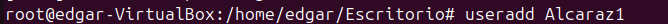
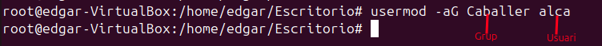
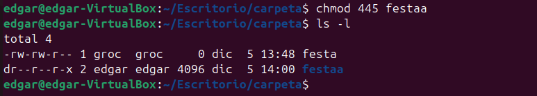
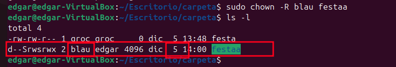

2. Gestió d usuaris, grups i permisos
1. Consoles virtuals i terminal nativa Accés a terminals virtuals CTRL + F3: Obre una terminal nativa (TTY). És útil si l'entorn gràfic falla o necessites accedir al sistema directament. CTRL + F2: Retorna al gestor d'inici de sessió (entorn gràfic). També pots alternar entre terminals virtuals amb les tecles F1 a F6.
2. Fitxers del sistema relatius a usuaris i grups
/etc/passwd: Conté informació sobre els usuaris del sistema. Cada línia representa un usuari amb els camps següents:
Nom d'usuari: Identificador de l'usuari. X: Indica que la contrasenya està encriptada a /etc/shadow. UID: Identificador únic de l'usuari. GID: Identificador del grup principal de l'usuari. Home directory: Carpeta personal de l'usuari. Shell: Terminal que utilitzarà l'usuari en iniciar sessió. /etc/group: Defineix els grups creats al sistema. Cada línia conté:
Nom del grup. GID (Group ID). Llista de membres: Usuaris assignats al grup. /etc/shadow: Conté contrasenyes encriptades i informació relacionada amb la seguretat dels usuaris. És accessible només per l'usuari root:
Contrasenya encriptada: Substitueix el camp "X" de /etc/passwd. Últim canvi de contrasenya, temps mínim/màxim per a canvis, etc. /etc/gshadow: Similar a /etc/group, però per grups amb contrasenya. També mostra qui són els administradors del grup.
Comandes per gestionar usuaris i grups**
Crear un usuari
Crea un usuari de manera més bàsica, sense demanar contrasenya ni crear el directori personal.

Afegeix un usuari amb informació completa: contrasenya, grups, directori personal, etc.
Eliminar un usuari Esborra un usuari de manera més bàsica, sense altres accions associades.

Informació sobre comandes per a usuaris

Crear un grup
Crea un nou grup al sistema.
Afegir un usuari a un grup
Utilitza usermod per afegir un usuari a un grup.
Explicació d'opcions:
-a: Assegura que no es perden altres grups als quals pertany l'usuari.
-G: Especifica el grup al qual afegir l'usuari.

Treure un usuari d’un grup
Utilitza gpasswd per eliminar un usuari d’un grup.

Canviar el grup principal d'un usuari
Gestió de Permisos**
Format de permisos a Linux
Els permisos es divideixen en tres grups:
Usuari (u): El propietari del fitxer.
Grup (g): Els usuaris que formen part del grup propietari.
Altres (o): Tots els altres usuaris.
Cada grup pot tenir tres tipus de permisos:
r: Lectura (4).
w: Escriptura (2).
x: Execució (1).
Els números octals representen combinacions d’aquests permisos:
0: Cap permís.
1: Execució.
2: Escriptura.
3: Escriptura i execució.
4: Lectura.
5: Lectura i execució.
6: Lectura i escriptura.
7: Tots els permisos (lectura, escriptura i execució).
Chmod

chmod -R

sticky: chmod numero de permisos o o+t
Creem la carpeta amb permisos 777 i l'sticky sera l'encarregat de fer que els usuaris no puguin borrar les creacions d'altres users


suid: chmod numero de permisos o u+s
Executa el fitxer amb els permisos del propietari.

sgid: chmod numero de permisos o g+s
Els nous fitxers creats dins heretaran el grup de la carpeta.

Chown
chown -R
Canviar el propietari de forma recursiva: 
Chgrp
chgrp -R
Canviar grup propietari de forma recursiva:

Acl
getfacl
Visualitzar ACL:
setfacl -m user:permiso de la carpeta
Afegir permisos ACL:
setfactl -b
Esborrar configuració ACL:

setfacl -x usuario carpeta
Eliminar permisos ACL:

Umask
Para poner un unmask ejecuta el comando:
Defineix els permisos predeterminats per a fitxers i carpetes. Exemple: 022 resulta en fitxers amb permisos 644 i carpetes amb permisos 755.
umask numero